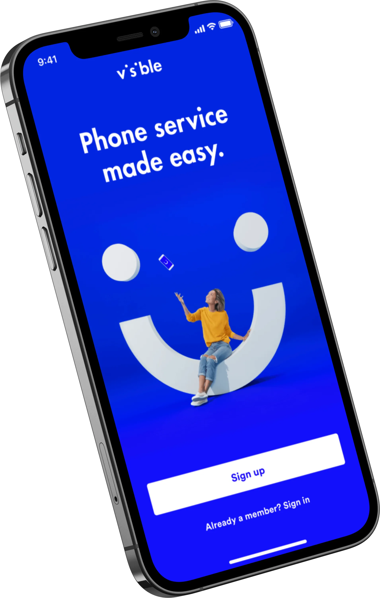
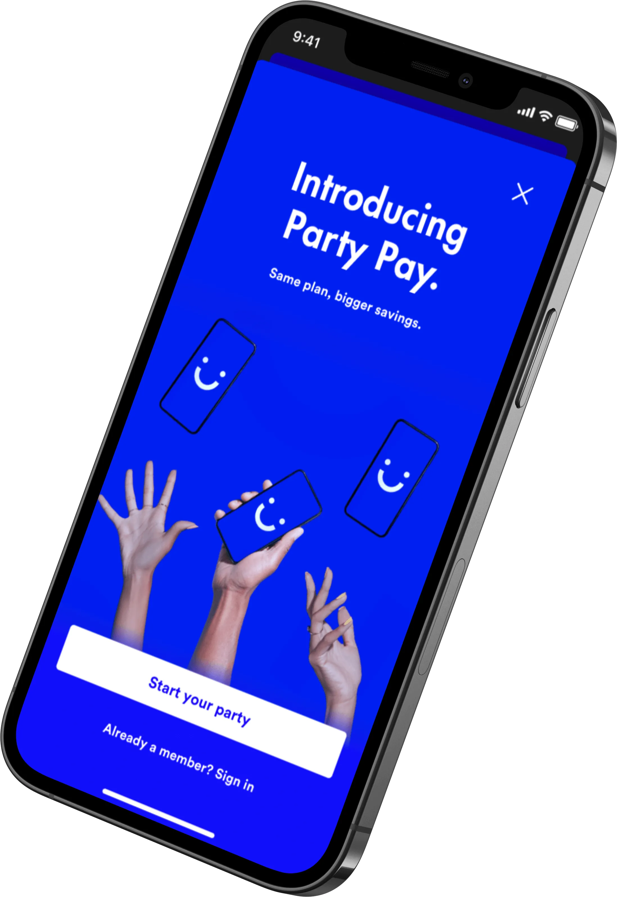
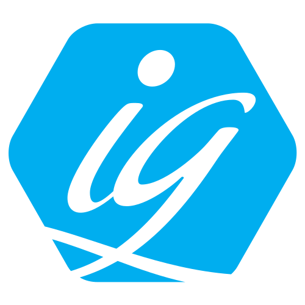
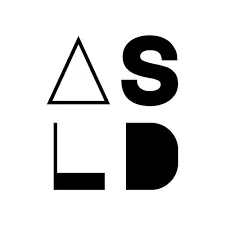

I work for clients in Denver, Boulder, San Francisco, New York, Seattle, Austin, Toronto, Bangalore, and Singapore, with bootstrapping startups and Fortune 50 companies.
I believe in an iterative, user-centered design process and participate in all phases of a product, from discovery to delivery to iteration.
I collaborate with product managers and engineers to ensure our customers' success to create value for the business. I focus on the customer experience over time as they interact with the product, brand, and company as a whole.
UX Foundations: Information Architecture
Certificate ID: AUSRC6jHmUf8RwhZRYZaXUNRef2k
Understanding Information Architecture
Certificate ID: AbrlX3AFVO_xSbza-uvCqNLcN45T
Learning Design Research
Credential ID AWn8h9f9T6LgY9i52aSlH4fq0nYF
UX Deep Dive: Mapping
Credential ID AaEhXOb11FkN2P4Bex4Zv0AVOej4
Learning Design Research
Credential ID AWn8h9f9T6LgY9i52aSlH4fq0nYF
UX Foundations: Research
Credential ID Aba5DYi5j7HGk6vuEG7Lmr5sFkQd
UX Research Methods: Interviewing
Credential ID AbMBlifi-4_s5r3joMnHBPYZX7J6
UX Research Methods: Card Sorting
Credential ID ARJXsXEfxGb3_sdVOUYH9MmwBTLT
Agile Foundations
Credential ID AULWv6hNNTci2xKigc8K4EaKRMeZ
Design Thinking: Implementing the Process
Credential ID AZpyG2Wx4LRdJ6-KIRybvO7u35pL
Design Thinking: Understanding the Process
Credential ID Ae45IXCRzHgK06S8VbOutyNgK3i3
Scrum: The Basics
Credential ID AdIyuBSLBrjIs74-oHaX_aHG_ws5
Continuous Discovery Habits
Teresa Torres
Empowered
Marty Cagan
Outcomes over Output
Joshua Seiden
Inspired
Marty Cagan
Just Enough Research
Erika Hall
Lean UX
Jeff Gothelf
Webflow
Responsive web design tool
Whimsical
The visual workspace for thinking and collaboration.
Figma
The collaborative interface design tool
FigJam
An online whiteboard for teams to ideate and brainstorm together
Sketch
The digital design toolkit
Principle
Prototypes that feel like the real thing
Atlassian
Software development and collaboration tools
Asana
Team-based work management
Slack
Business communication platform
